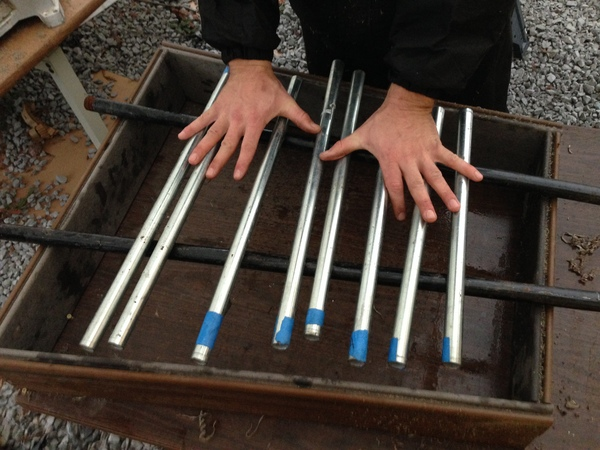
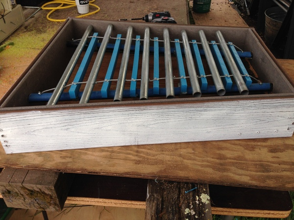
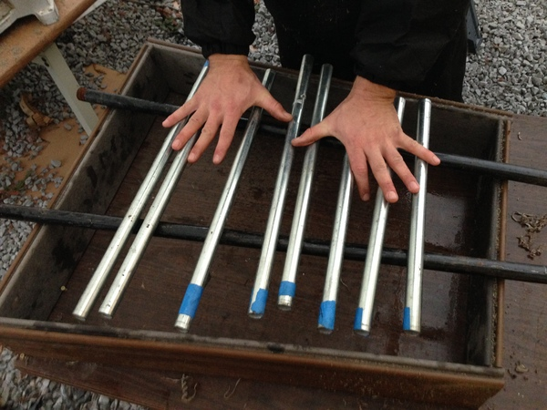
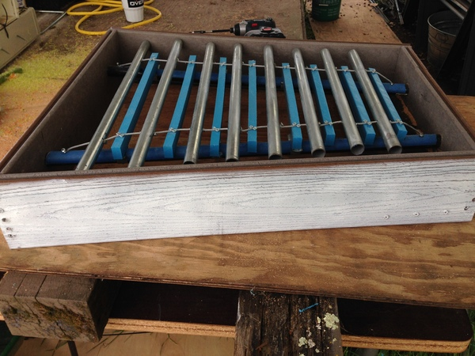

Anneliese Thorp
I am in the middle of my thrid year at the University of California, Riverside. The degree I am currently working towards is a psychology degree, Bachelor's of Arts.
I transferred to this school for the fall quaerter of 2019. I transferred from a community college back in my hometown of Santa Rosa, California called the Santa Rosa Junior College. Santa Rosa is located in Sonoma County, about 7 hours North of Riverside by car.
I am not sure whether or not I will pursue a doctorate in the field of psychology but it is not outside the realm of possibility.
Experience
Cashier
• Worked while attending comunity college
• Worked multiple stations such as cashier, dishwasher, and handing out food to customers
• Experience with customer service
Animal Shelter Dog Walker
• Visited the shelter and spent time with animals
• Took dogs on walks around the back of the shelter and around the parking lot
Exhibit Designer
• Designed and created a glockenspiel, a metal xylophone, to be displayed for the children to play with
• Helped falculty at the museum with side projects they needed help with
• Spent 40 hours working on creating the instrument
• Recieved an award of apreciation for my time and efforts towards the museum
Education
Santa Rosa Junior College
University of California Riverside
Portfolio
 (1).jpeg)
 (1).jpeg)


 